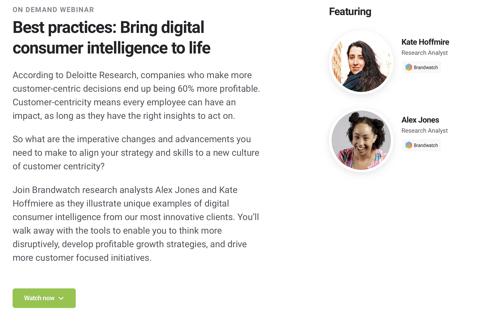
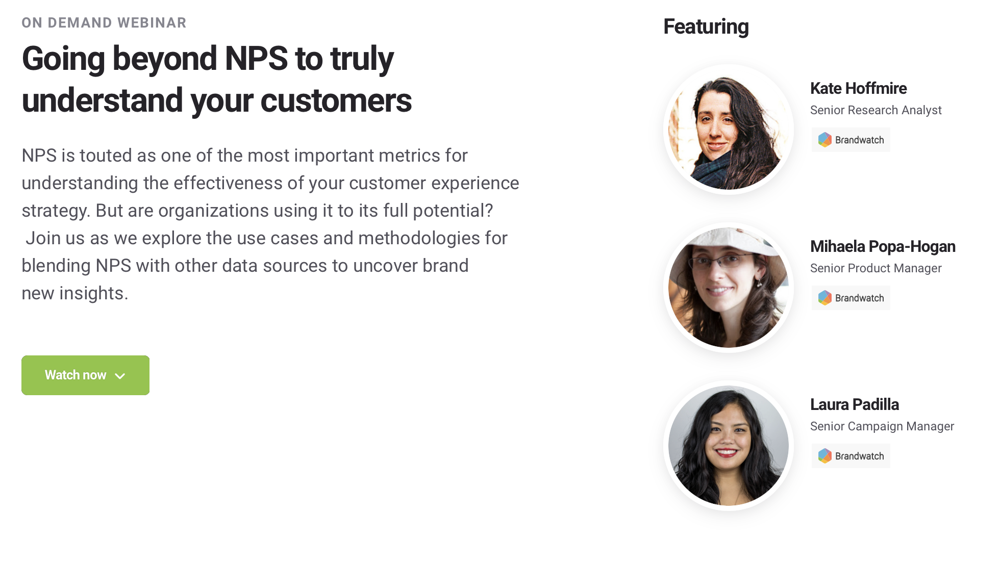
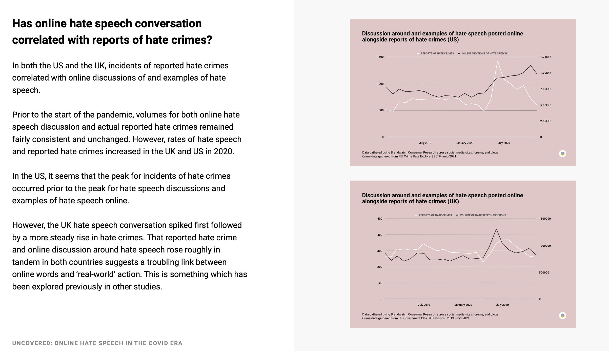
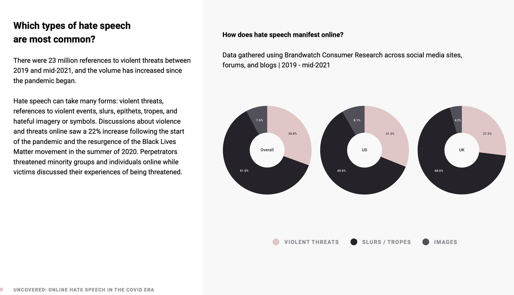
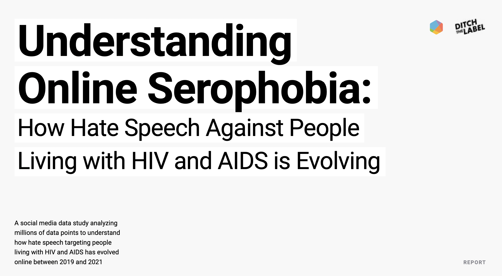
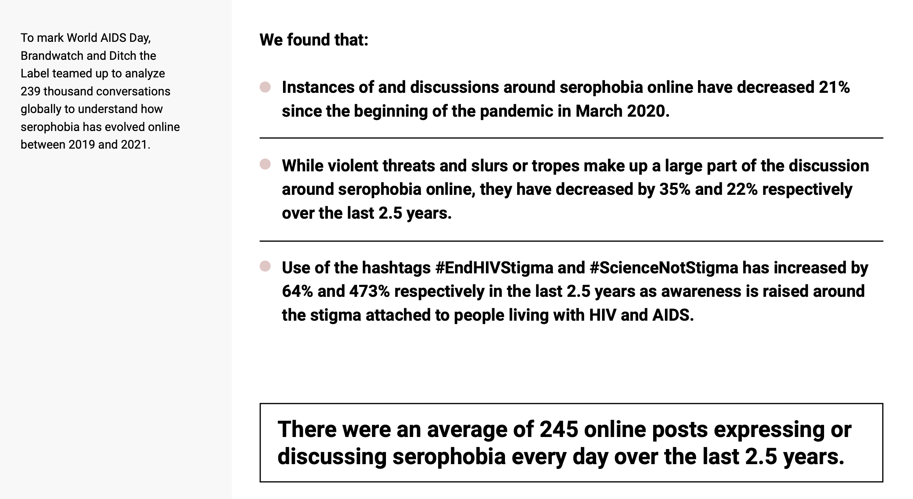
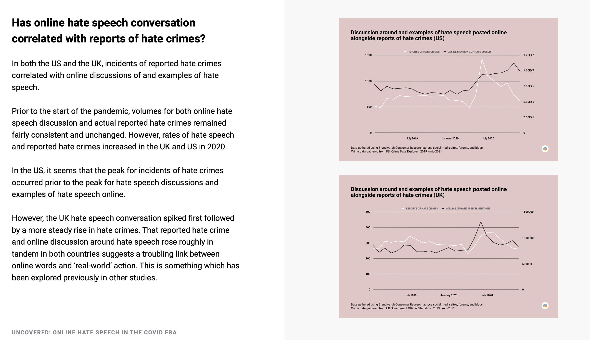
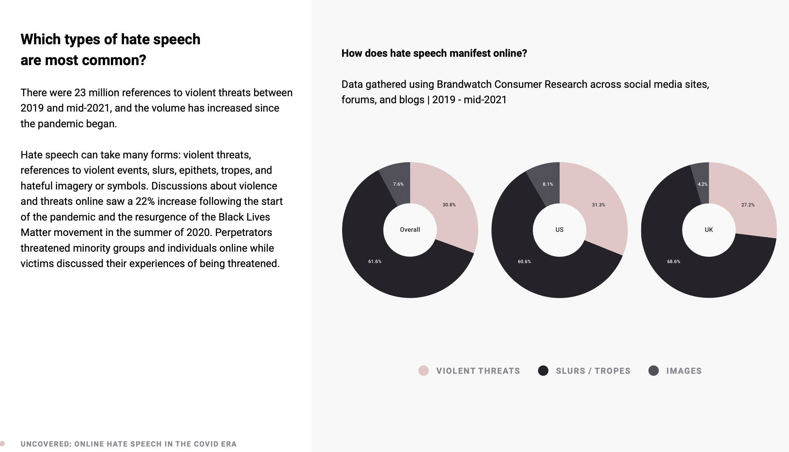
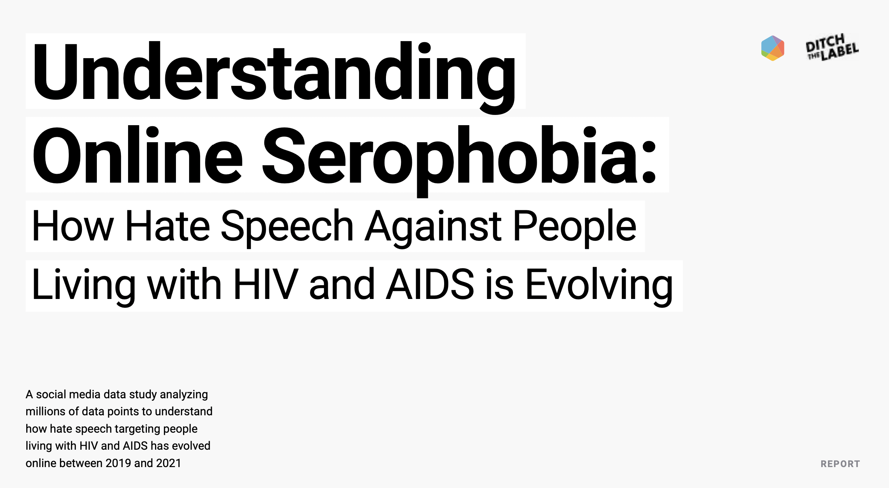
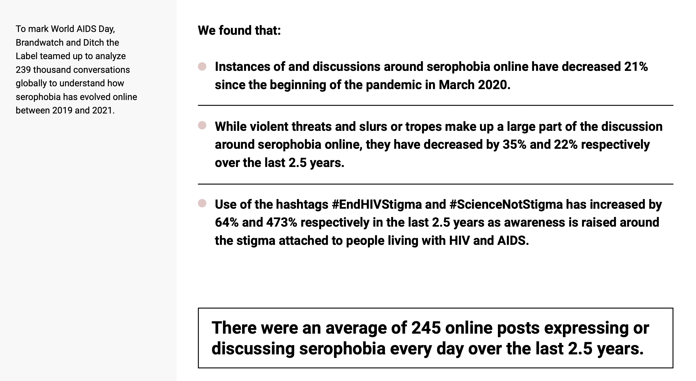

I have been involved in the market research and consumer insights space for a little over a decade now. In that time I have presented at conferences, ran webinars, and published some of my research.
 
Woring with Brandwatch and the non-profit Ditch the Label, I was able to lead the research and analysis on two projects during December 2021 on hate speech during the COVID pandemic as well as a report on serephobia for World Aids Day 2021.
 






